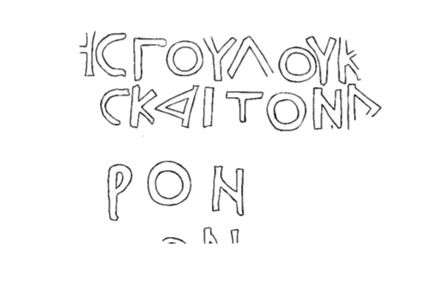

სეფიეთის კირქვის ფილაSepieti Limestone Plaque
სეფიეთის კირქვის ფილა
Sepieti Limestone Plaque
შინაარსი / Summary
მოსახსენებელი Memorial
ბიბლიოგრაფია Bibliography
კრიტიკული გამოცემა Interpretive Edition
✝ ὑπὲρ εὐχῆς δούλου Κ λήμεντο-
ς καὶ τῶν δ ιαφε-
ρόν των αὐτοῦ
ον
დიპლომატიური გამოცემა Diplomatic Edition
✝ ΥΠΕΡ ΕΥΧΗΣ ΔΟΥΛΟΥ Κ ΛΗΜΕΝΤΟ
Σ ΚΑΙ ΤΩΝ Δ ΙΑΦΕ
ΡΟΝ ΤΩΝ ΑΥΤΟΥ
ΟΝ

Sepieti plaque, 1989
{'ka': 'სალოცველად მონისა კლიმენტისა და მახლობელთა მისთა.', 'en': 'For the blessing of the servant of the God Klimentos and for his close people.'}
{'ka': 'ყურადღებას იპყრობს დაწერილობა γουλου, სიტყვისთვის δούλου, რაც ბერძნული ენის განვითარების მთელ მანძილზე გუტურალთა და დენტალთა მონაცვლეობით უნდა აიხსნას. საკუთარი სახელი კლიმენტი - Κλήμεντος პირობითად არის აღდგენილი. წარწერის დათარიღების საფუძველია ასოთა მოხაზულობა (Α, Δ, C, Υ), ο-ის ხმარება ω-ს ნაცვლად, გავრცელებული ფორმულა (ὑπὲρ εὐχῆς).', 'en': 'The word γούλου present in the inscription catches our attention for its manner of writing, that is instead of the word δούλου, -\n this can be explained by the interchange of guttural and dental phonemes characteristic for Greek during all periods of its development.\n The personal name Κλήμεντος is restored. The inscription can be dated according the letters (Α, Δ, C, Υ), usage of ω instead of ο is quite frequent formula (ὑπὲρ εὐχῆς).'}
<div type="edition" xml:lang="ka" ana="mtavruli" xml:space="preserve">
<ab>
<lb n="1"/><w lemma="ქრისტე"><expan><abbr>ქ</abbr><ex>რისტ</ex><abbr>ე</abbr></expan></w>
<w lemma="განსუენება"><expan><abbr>გა</abbr><ex>ნ</ex><abbr>ო</abbr><ex>ჳ</ex><abbr>ს</abbr><ex>უ</ex><abbr>ენე</abbr></expan></w>
<w lemma="სულ">სოჳ<lb n="2" break="no"/>ლსა</w>
<name nymRef="ვაჩა">ვაჩაჲს<lb n="3" break="no"/>ასა</name>
<name nymRef="გურა"><expan><abbr>გო</abbr><ex>ჳ</ex><abbr>რაჲ<lb n="4" break="no"/>სასა</abbr></expan></name>
<name nymRef="მირა"><expan><abbr>მ</abbr><ex>ი</ex><abbr>რა</abbr><ex>ჲ</ex><abbr>ს</abbr><ex>ა</ex><abbr>ს</abbr><ex>ა</ex></expan></name>
</ab>
</div>